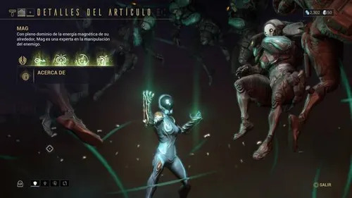
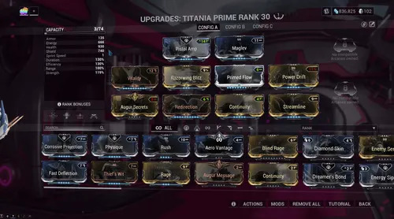
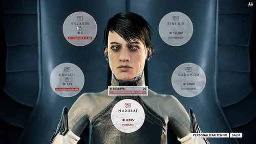

Elegir y cambiar de Warframe
En el Arsenal puedes revisar los Warframes que tienes disponibles y equipar el que quieras llevar a una misión. Cada uno tiene atributos y poderes diferentes, así que la elección puede cambiar mucho la forma de jugar: algunos se especializan en resistir daño, otros en moverse con rapidez, apoyar al escuadrón o controlar a los enemigos.
La pantalla permite comparar opciones y consultar sus características antes de confirmar. Si todavía tienes pocos, continúa con las misiones y reúne los planos y materiales necesarios para construir otros. Cambiar de Warframe no borra el progreso de los demás: cada uno conserva su propio rango y configuración.

Consultar y usar habilidades
Cada Warframe dispone de una habilidad pasiva y cuatro habilidades activas. La pasiva funciona como una ventaja propia del personaje; las activas se utilizan durante la misión y suelen consumir energía. En el menú de habilidades puedes leer qué hace cada poder y comprobar cómo se relaciona con el estilo del Warframe.
Antes de entrar en una misión, familiarízate con las descripciones y los controles. Algunas habilidades infligen daño, otras protegen, curan, desplazan o debilitan a los enemigos. Probarlas en situaciones distintas te ayuda a entender cuándo conviene reservar energía y cuándo una habilidad puede facilitar el objetivo o apoyar al equipo.

Mejorar armas y Warframes con mods
Los mods son mejoras que se instalan en el equipo para cambiar sus atributos. Según el mod, puedes aumentar el daño, la resistencia, la capacidad de una habilidad o distintas características de un arma. La captura muestra la pantalla de mejoras de un Warframe; se accede a configuraciones parecidas desde el Arsenal para modificar también las armas.
Cada pieza de equipo tiene una capacidad limitada para alojar mods. Al subir de rango el objeto aumenta esa capacidad, mientras que mejorar un mod puede fortalecer su efecto y también hacer que ocupe más espacio. Empieza con cambios pequeños, revisa los valores que aparecen en pantalla y conserva una configuración equilibrada en lugar de intentar subir todos los mods a la vez.
Las ranuras con polaridad compatible reducen el coste de capacidad de ciertos mods. Por eso una configuración eficaz depende de combinar el espacio disponible, el efecto que buscas y la misión que vas a jugar.

El Operador y las escuelas de Enfoque
El Operador es una figura distinta del Warframe y forma parte de la historia de Warframe. A medida que avanzas en las misiones narrativas, desbloqueas opciones para personalizarlo y utilizar sus capacidades. La imagen muestra la selección de escuelas de Enfoque, especializaciones que orientan estas habilidades hacia diferentes ventajas.
Las escuelas incluyen Madurai, Vazarin, Naramon, Unairu y Zenurik. Cada una ofrece un conjunto propio de mejoras; puedes explorar sus nodos y escoger cuál desarrollar según las ventajas que te interesen. El Enfoque se obtiene jugando y se invierte en desbloquear o mejorar esas opciones, así que es un sistema de progreso gradual.
No necesitas decidirlo todo al empezar. Primero completa las misiones que desbloquean al Operador y luego revisa las escuelas disponibles. Así podrás entender cómo complementan a tu Warframe y elegir con más contexto.
